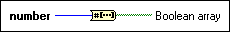

Number To Boolean Array Function
Owning Palette: Boolean Functions
Requires: Base Development System
Converts an integer or fixed-point number to a Boolean array. If you wire an integer to number, Boolean array returns an array of 8, 16, 32, or 64 elements, depending on the number of bits in the integer. If you wire a fixed-point number to number, the size of the array that Boolean array returns equals the word length of the fixed-point number. The 0th element of the array corresponds to the least significant bit of the two's complement representation of the integer.

 Add to the block diagram Add to the block diagram |
 Find on the palette Find on the palette |